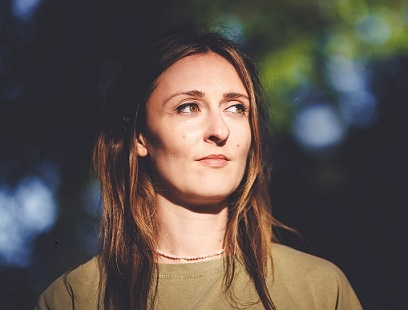

I am a postdoctoral researcher at the Institut des sciences du langage of the Université de Neuchâtel. I obtained my PhD from the Ecole Normale Supérieure in Paris, where I wrote a dissertation on the diachrony of expletive negation under the supervision of Alda Mari. My work lies at the intersection of formal semantics, diachronic linguistics and corpus linguistics. Over the years, I have developed skills in corpus linguistics and statistical methods for the analysis of textual data.
My research focuses on how the production of expletive negation is constrained by the linguistic environments in which it occurs, such as attitude verbs and adverbial connectives. More broadly, I am interested in the semantics and pragmatics of negation.